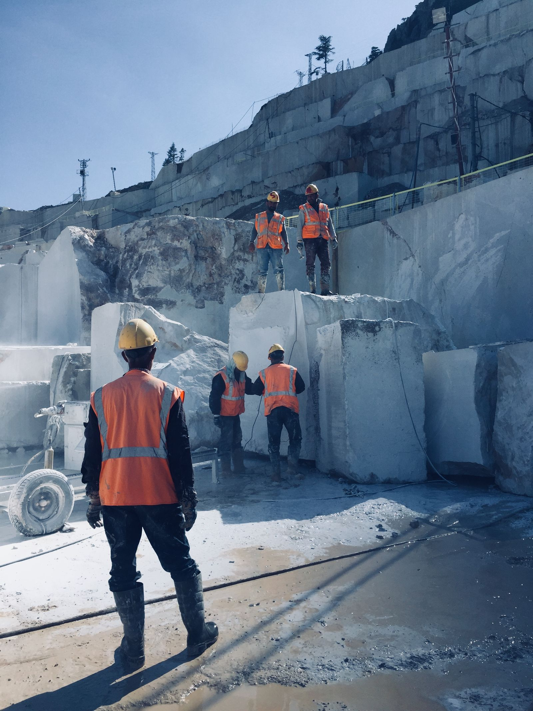
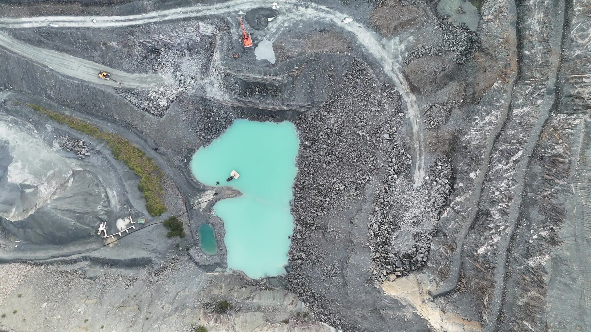

01
Conectamos un punto
Elegimos un acceso, una balanza o una zona de carga. Evaluamos cobertura, iluminación y calidad de imagen.
escena validadaMenos espera. Más control.
Usá la visión artificial para encontrar dónde se pierde tiempo y cuidar lo que mueve tu operación.
Un punto de operación. Un resultado para medir.No se pudo cargar el video. Podés ver la imagen de la operación.
Colas, viajes y horas de flota. Convertí lo que sucede frente a tus cámaras en información para decidir dónde actuar.
No se pudo cargar el video. Podés ver la imagen de la cantera.
Un punto de partida para mejorar el flujo.
Datos ilustrativos. Cada detección se valida en tu operación.
Hacé visibles los eventos que necesitan atención. Definí reglas por sector y revisá cada aviso con su contexto.


Reglas por sector. Avisos con contexto. Siempre, revisión del responsable.
El valor aparece cuando los datos cambian una decisión. Por eso, el piloto empieza con una pregunta concreta de tu operación.
Elegimos un acceso, una balanza o una zona de carga. Evaluamos cobertura, iluminación y calidad de imagen.
escena validadaConvertimos movimientos visibles en eventos. Cada ingreso, espera y salida se puede revisar con su evidencia.
registro verificableComparamos registros, ajustamos la operación y medimos qué costo realmente baja, manteniendo el trabajo realizado.
decisión con respaldoEmpezamos con un alcance acotado. El piloto tiene que demostrar qué cambia en tu operación.
Explorá cuánto podría representar una reducción de espera. Usá el costo que efectivamente dejarías de pagar por cada hora liberada.
Antes de software, cámaras, instalación y soporte. Si liberar horas no reduce un gasto, el ahorro monetario es cero.
Revisamos ubicación, resolución, encuadre e iluminación. Si la imagen permite observar el evento, evaluamos su uso. Si falta cobertura, definimos el ajuste necesario.
Acordamos una línea de base y un cambio operativo. El ahorro se mide sobre gastos que realmente bajan. Las horas liberadas también pueden representar capacidad adicional.
El piloto puede incluir la conciliación con GPS, partes y planillas. La visión aporta evidencia en un punto; el peso transportado sigue proviniendo de la balanza.
Probamos con imágenes de tu operación, también en condiciones difíciles. Medimos eventos omitidos y falsas alertas antes de definir dónde conviene usar el sistema.
Definimos reglas, horarios y un responsable por sector. Cada aviso conserva su contexto visual para revisión humana. La visión complementa los procedimientos de seguridad existentes.
Una pregunta operativa, un responsable y una muestra autorizada de imágenes y registros. Con eso definimos el punto de captura, los eventos y el criterio de éxito.
Elegí un acceso, una balanza o una zona de carga. Definí qué querés mejorar y llevate un brief para tu equipo.
Alcance definido · Evidencia revisable · Impacto medible